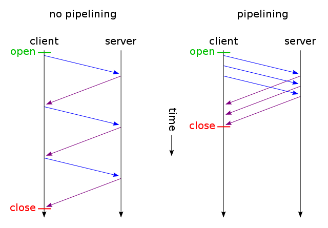
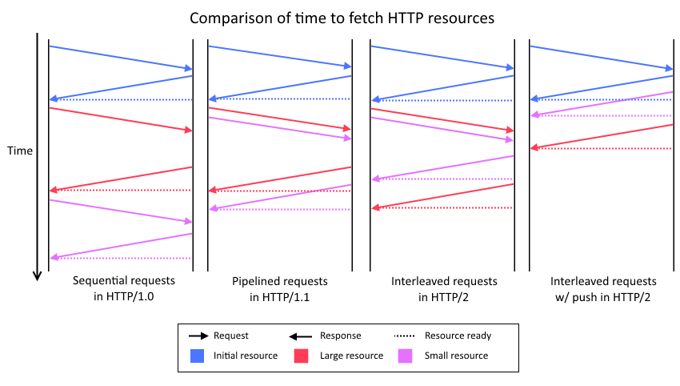

Yes, it uses the same request/response semantics as HTTP/1.1, but introduces...
HTTP/2 significantly increases the fundamental complexity of HTTP. This has meant creating an entirely new internal code path within Node.js to support it.
In other words, we did not extend the existing HTTP/1.1 implementation, we created an entirely new subsystem within Node.js core.
const http2 = require('http2');
const key = fs.readFileSync('../key.pem');
const cert = fs.readFileSync('../cert.pem');
const server = http2.createSecureServer({ key, cert });
server.on('stream', (stream, headers) => {
stream.respond();
stream.end('Hello World');
});
server.listen(8888);
Node.js supports HTTP/2 over plain-text and TLS.
Web Browsers,
however, require that we use TLS...
const key = fs.readFileSync('../key.pem');
const cert = fs.readFileSync('../cert.pem');
const server = http2.createSecureServer({ key, cert });
The new HTTP/2 implementation supports a low-level Core API and a high-level Compatibility API that is designed to be roughly compatible with the HTTP/1.1 module.
The low-level Core API works with `Http2Stream` objects directly:
server.on('stream', (stream, headers) => {
stream.respond();
stream.end('Hello World');
});
The Compatibility API is nearly identical to HTTP/1:
server.on('request', (req, res) => {
res.writeHead(200);
res.end('Hello World');
});
The Core API provides the most flexibility, the best performance, and direct access to new HTTP/2 features.
The Compatibility API is more familiar, and is easier to port existing HTTP/1 code to use.
With HTTP/1.1, TCP connections generally permit only a single request/response transaction at a time. Pipelining does allow multiple requests to be sent in a sequence, but those are serialized and processed one after the other.
Generally, a single TCP connection can carry only a single HTTP/1 request/response at a time.
(Image credit: By Mwhitlock - Own work, Public Domain, Link)
HTTP/2 central feature is to eliminate this restriction via multiplexing... that is multiple simultaneous HTTP request/response operations may exist within a single long-lived TCP connection, and response may be sent in any order.
Headers and data from multiple requests and responses flow simultaneously over the connection within discreet packets called "frames".
(Image credit: By William Reilly)
The Http2Session is a potentially long-lived object
that manages the state of an HTTP/2 TCP connection.
The Http2Stream is an object representing a single
HTTP request and response flow within an Http2Session.
A single Http2Session may (theoretically) contain up to
231-1* concurrent Http2Stream
instances.
*(The actual number is typically around 100 or so)
Http2Stream is a Node.js streams Duplex
that is used to read and write HTTP request and response data.
server.on('stream', (stream, headers) => {
stream.on('data', (chunk) => { /* ... */ });
stream.on('end', () => { /* ... */ });
stream.respond();
stream.end('Hello World');
});
When using the Core API, Http2Stream is the object
you'll be working with most often.
On the server side, Http2Stream can be used to
initiate push streams...
server.on('stream', (stream, headers) => {
stream.pushStream({ ':path': '/mycode.js' }, (err, stream) => {
stream.respond();
stream.end('alert("hello world")');
});
stream.respond();
stream.end('Hello World');
});
Also on the server side, Http2Stream can be used to
send informational (1xx) headers...
server.on('stream', (stream, headers) => {
stream.additionalHeaders({
':status': 102,
'abc': 'xyz'
});
stream.respond();
stream.end('Hello World');
});
We can also bypass the Streams API entirely and send a file (with all i/o happening at the C++ level)
server.on('stream', (stream, headers) => {
stream.respondWithFile('some-file-to-send');
});
const fd = fs.openSync('some-file-to-send', 'r')';'
server.on('stream', (stream, headers) => {
stream.respondWithFD(fd);
});
This is a lot faster.
The Http2Session object is used to:
For example, sending a PING
server.on('session', (session) => {
session.ping(
Buffer.from([1, 2, 3, 4, 5, 6, 7, 8]),
(err, duration, payload) => {
console.log(`Round-trip took ${duration} milliseconds`);
}
);
});
Pings may be sent by the client or server.
Here is a simple GET request:
const http2 = require('http2');
const session = http2.connect('https://localhost:1234');
const stream = session.request({ ':path': '/' });
stream.on('response', (headers) => {
stream.on('data', (chunk) => { /** .. **/ });
stream.on('end', () => { /** .. **/ });
});
Currently there is no Compatibility API for the client side.
HTTP/2 exposes many configuration options...
Http2Session
Http2Stream
Http2Streams.
HTTP/2 also introduces a new kind of Http2Session
level error reporting that is independent of HTTP status codes:
0x00 - No Error0x01 - Protocol Error0x02 - Internal Error0x03 - Flow Control Error0x04 - Settings Timeout0x05 - Stream Closed0x06 - Frame Size Error0x07 - Refused Stream0x08 - Cancel0x09 - Compression Error0x0A - Connect Error0x0B - Enhance Your Calm0x0C - Inadequate Security0x0D - HTTP/1.1 RequiredThe Performance API can be used to monitor HTTP/2 performance..
const { PerformanceObserver } = require('perf_hooks');
const obs = new PerformanceObserver((items) => {
const entry = items.getEntries()[0];
console.log(entry.entryType); // prints 'http2'
if (entry.name === 'Http2Session') {
// entry contains statistics about the Http2Session
} else if (entry.name === 'Http2Stream') {
// entry contains statistics about the Http2Stream
}
});
obs.observe({ entryTypes: ['http2'] });
The data currently available includes
You can use HTTP/2 with fastify (https://npmjs.org/fastify) today.
const fs = require('fs')
const path = require('path')
const fastify = require('fastify')({
http2: true,
https: {
key: fs.readFileSync('fastify.key'),
cert: fs.readFileSync('fastify.cert')
}
})
fastify.get('/', function (request, reply) {
reply.code(200).send({ hello: 'world' })
})
fastify.listen(3000)
Support for HTTP/2 support in express is being actively worked on.
Node.js core contributor Sebastiaan Deckers has launched https://http2.live...
- Twitter: [@jasnell](https://twitter.com/jasnell) - GitHub: [@jasnell](https://github.com/jasnell)